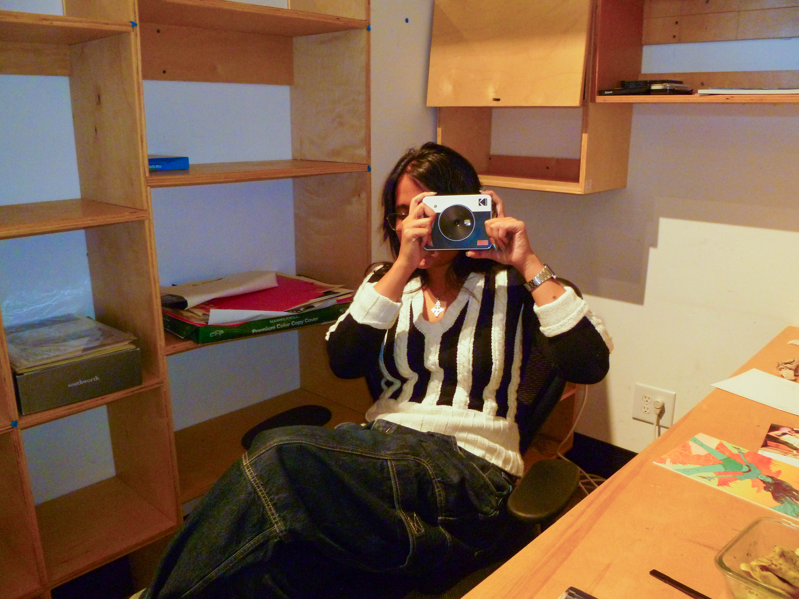

interview
Alternative Futures with Amal Gupta
“In 50 years, you haven’t upgraded your alien design?"

If you asked Amal Gupta, “what is the craziest thing that has ever happened to you?”, she would say, “nothing ever happens to me.” Having traveled from the suburbs of Houston, Texas, to an undergrad in English at Duke on the east coast, eventually landing at California Institute of the Arts for her masters in graphic design, (not to mention Berlin, Italy and everywhere in between) it sounds like some things must surely have, whether she, citing her own proverbial dementia, remembers it or not. What seems to be more interesting to her is not what happens to her, but what happens in the world of her work, or rather, imagining what is possible.
Unassuming, sarcastic, & entirely strange, I sit down with Amal outside of her studio while she eats her lunch. A Santa Ana wind of at least ten miles per hour rushes by, and her spoon falls to the floor.
How is it being a twin?
AMAL: A lot of people ask me that, and I lowkey don’t think I can give them the answer that they expect, because like, we’re not identical, you know? I feel like with boy/girl twins it’s a lot easier to feel like a separate person. But it’s also kinda nice because at school you know all the same people, so you can like shit talk the same people, because me and him are haters. I don’t know. high school was kind of rough because it was like, we have the same group of friends, and sometimes they do this thing where they make it obvious which twin they like better, and he was always like the cool one. He’s like cool and funny, not that I’m not cool and funny, I am now, but not in high school. And it was like oh fuck, these people only like me because of my brother. That’s why college was awesome.
ANGEL: You get to be your own person.
AMAL: Yeah. So then me and him went to two different colleges, and I went to the better one.
ANGEL: So you became the cooler twin.
AMAL: Yeah. So having to start from scratch basically, and then figure out how to be a person that can make friends. Then I got to figure out, this is what people like about me that is not related to Ayoosh. But its ok. It was fun. Me and him got to do our grad trip together after college, which was like the first time we had ever hung out for that long of a period of time. Two weeks, we’re in Italy and Croatia, we got to do everything together, we got to share a hotel room. I’ve never laughed as hard with anyone as I do with him, because he’s like, unbelievably funny, but then it’s like, oh my god, half that trip we’re fighting. You know. It was good.
Do you have any other siblings?
AMAL: No it’s just us. Thank fucking god. Can you imagine? Being companion to us? We’d probably ignore the other one, you know?
ANGEL: That’s really sweet.
AMAL: My parents also didn’t want twins, they just wanted a girl. So it’s nice, because then I get to say that he’s the mistake.
What’s the craziest thing that’s happened to you?
AMAL: Oh. Brother. Nothing happens to me. I am famously boring. I have no stories. I don’t even know what my friends say to people when they talk about me because it’s like, what the fuck do you say? I don’t know. I’m sure things have happened to me.
ANGEL: That’s going to be the headline.
Unassuming, sarcastic, & entirely strange, I sit down with Amal outside of her studio while she eats her lunch. A Santa Ana wind of at least ten miles per hour rushes by, and her spoon falls to the floor.
Thursday Oct 15, 2026 12:10 PM
How is it being a twin?
AMAL: A lot of people ask me that, and I lowkey don’t think I can give them the answer that they expect, because like, we’re not identical, you know? I feel like with boy/girl twins it’s a lot easier to feel like a separate person. But it’s also kinda nice because at school you know all the same people, so you can like shit talk the same people, because me and him are haters. I don’t know. high school was kind of rough because it was like, we have the same group of friends, and sometimes they do this thing where they make it obvious which twin they like better, and he was always like the cool one. He’s like cool and funny, not that I’m not cool and funny, I am now, but not in high school. And it was like oh fuck, these people only like me because of my brother. That’s why college was awesome.
ANGEL: You get to be your own person.
AMAL: Yeah. So then me and him went to two different colleges, and I went to the better one.
ANGEL: So you became the cooler twin.
AMAL: Yeah. So having to start from scratch basically, and then figure out how to be a person that can make friends. Then I got to figure out, this is what people like about me that is not related to Ayoosh. But its ok. It was fun. Me and him got to do our grad trip together after college, which was like the first time we had ever hung out for that long of a period of time. Two weeks, we’re in Italy and Croatia, we got to do everything together, we got to share a hotel room. I’ve never laughed as hard with anyone as I do with him, because he’s like, unbelievably funny, but then it’s like, oh my god, half that trip we’re fighting. You know. It was good.
Do you have any other siblings?
AMAL: No it’s just us. Thank fucking god. Can you imagine? Being companion to us? We’d probably ignore the other one, you know?
ANGEL: That’s really sweet.
AMAL: My parents also didn’t want twins, they just wanted a girl. So it’s nice, because then I get to say that he’s the mistake.
What’s the craziest thing that’s happened to you?
AMAL: Oh. Brother. Nothing happens to me. I am famously boring. I have no stories. I don’t even know what my friends say to people when they talk about me because it’s like, what the fuck do you say? I don’t know. I’m sure things have happened to me.
ANGEL: That’s going to be the headline.